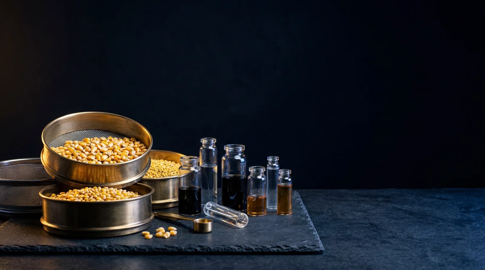

المفهوم 01: خط القسمة التشخيصي (Field Telemetry Split Stage)
القواعد: Split Stage
الخط: Cairo 900 + IBM Plex Arabic
التقنية: SVG Hairline + GSAP Flip/Split
دخول المتدربينحساب جديد

الفاصل الميداني 50/50
من الملاحظة العشوائية إلى انضباط المنشأة
نظام مقارنة مستمر يضع الحدس الفردي في مواجهة منهجية التشخيص والتركيب الغذائي وإدارة المزرعة.
لقطة مفاهيمية 2D + تركيب HTML/CSS RTL
آلية التمرير التوقيعية
محور قياس عمودي ثابت يتسع في المشهد الختامي (50% ← 100%) ليطوي الخلاف في منهج واحد.
ملاءمة BOSLA
قوية في المقارنة التعليمية، لكنها صارمة وأقل تعبيراً عن الانتقال التدريجي المكاني بين العنبر والمختبر.
الأداء والمفاضلة
صفر WebGL وأخف وزن صور (87.6 KB)، لكن تقسيم الشاشة يفقد تأثيره البصري عند الشاشات الضيقة للهاتف.